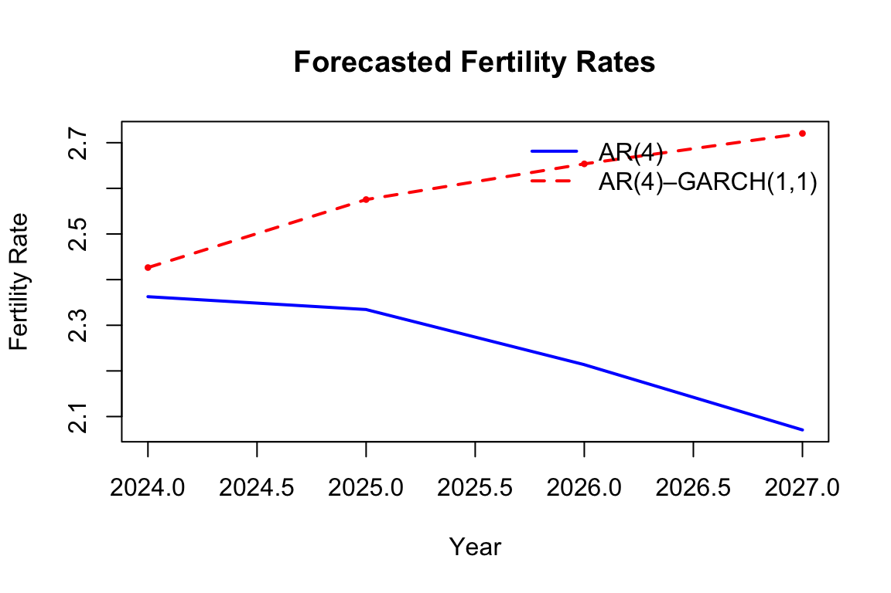

Report “Fertility Rate Forecasting for Saudi Arabia”
Introduction
Over the past six decades, Saudi Arabia has undergone one of the most rapid fertility transitions in the world. In the 1960s, the fertility rate was nearly eight children per woman, largely driven by the country’s conservative and religious social structure. In contrast, recent decades have seen a dramatic decline, with fertility rates falling to around two children per woman. This sharp reduction can be attributed to sweeping socio-economic reforms, including the expansion of women’s education, shifts in female labor market participation, and broader societal transformations under Vision 2030.
This project aims to analyze and forecast Saudi Arabia’s fertility rate using the ARIMA model. By modeling historical trends and projecting future changes, the study seeks to shed light on the potential implications of fertility dynamics for labor market policies and broader social development strategies in Saudi Arabia.
Definition & Data Source
The Total Fertility Rate (TFR) measures the average number of children a woman would have over her lifetime if she were to experience the current age-specific fertility rates throughout her childbearing years. It is expressed as the number of births per woman in a given year.
For this study, the analysis covers the period 1960–2023, utilizing annual data obtained from the World Bank Open Data platform. The dataset provides consistent and internationally comparable fertility indicators, making it a reliable source for examining long-term demographic trends in Saudi Arabia
Methodolgy
To drive the forecasting model we will transform the dataset from fertility rate to growth rate of fertility rate by using this equation: \[ \text{Growth Rate}_t = \Delta \ln(\text{Fertility Rate}_t) \] Additionally, we will conduct differencing to the series with (I=1), to make the series stationary. Finally, we chose AR(4) for this analysis because it passed all the tests.
Diagnosing
To start the analysis, Referring to the Figure 1, the series seems to have a severe downward trend, and a severe variance as well. This is an indication that the series isn’t stationary.
Data Processing
To address the non-stationarity observed in the fertility rate series, the variable is transformed from levels to growth rates using a log-difference transformation:
\[ \text{Growth Rate}_t = \Delta \ln(\text{Fertility Rate}_t) \]
This transformation substantially improves the visual properties of the series by removing the pronounced trend present in the level data as shown in Figure 2. However, despite the improved appearance, visual inspection alone is insufficient to establish stationarity. Therefore, formal unit root tests are conducted to assess whether the transformed series is stationary.

Both the Augmented Dickey–Fuller (ADF) test and the DF-GLS test are applied. In this report, greater emphasis is placed on the DF-GLS test, as it is generally more powerful than the standard ADF test, particularly in small samples and in the presence of deterministic components. The results of the DF-GLS test are shown below in Table 1:
| Test | Statistic |
|---|---|
| DF-GLS | -0.905 |
The absolute value of the DF-GLS t-statistic is 0.905, which is smaller than the 5% critical value of 1.96. As a result, the null hypothesis of a unit root cannot be rejected. This indicates that the growth rate of the fertility rate remains non-stationary, even after log-differencing.
Differncing
To achieve stationarity, further differencing is applied to the growth rate series. Specifically, the first difference of the growth rate is taken (I=1):

The differenced series in Figure 3 exhibits a substantial improvement in its time-series properties. Visual inspection suggests that the mean is now stable over time, indicating potential stationarity. However, some variability in the variance remains, which may raise concerns about heteroskedasticity and will be addressed in subsequent diagnostics.
To formally assess stationarity, the same unit root testing procedure is applied to the differenced series, focusing again on the DF-GLS test due to its superior power properties. the results of the test is shown in Table 2
| Test | Statistic |
|---|---|
| DF-GLS | -2.411 |
The absolute value of the DF-GLS t-statistic is 2.411 which exceeds the 5% critical value of 1.96. Consequently, the null hypothesis of a unit root is rejected. This provides strong evidence that the differenced growth rate series is stationary.
Thus, after first differencing, the fertility rate series satisfies the stationarity condition required for subsequent time-series modeling.
ARIMA modeling
Having established that the series is integrated of order one (I=1) , the next step is to identify the appropriate ARIMA specification by selecting the autoregressive (p), and moving average (q) orders.
Multiple ARIMA models were estimated and evaluated through an iterative process, including ARIMA(1,1,0), ARIMA(2,1,0), ARIMA(1,1,1), and ARIMA(4,1,0). Model performance was assessed using information criteria (AICc and BIC) as well as residual diagnostics based on the Ljung–Box test.The Ljung–Box test was conducted at lags 8 and 16. The choice of 16 lags follows the standard rule-of-thumb of N/4, where N = 64 in this case. Table 3 summarizes the estimated coefficients, information criteria, and Ljung–Box test statistics for each candidate model.
| AR(1) | ARMA(1,1) | AR(2) | AR(4) | |
|---|---|---|---|---|
| Theta1.SE. | 0.15 (0.142) | 0.079 (0.455) | 0.153 (0.142) | -0.148 (0.131) |
| Theta2.SE. | N/A | N/A | -0.059 (0.144) | -0.174 (0.122) |
| Theta3.SE. | N/A | N/A | N/A | -0.462 (0.121) |
| Theta4.SE. | N/A | N/A | N/A | -0.513 (0.128) |
| Phi1.SE. | N/A | 0.074 (0.431) | N/A | N/A |
| AICc | -303.789 | -301.609 | -301.748 | -318.458 |
| BIC | -299.738 | -295.642 | -295.780 | -308.894 |
| LB8.p.value. | 17.1 ( 0.01679 ) | 17.24 ( 0.0159 ) | 17.92 ( 0.00643 ) | 7.97 ( 0.09276 ) |
| LB16.p.value. | 28.76 (0.01729) | 28.9 (0.01655) | 29.67 (0.00847) | 17.14 (0.14428) |
The results indicate the following:
ARIMA(1,1,0): This model performs well in terms of AICc and BIC. However, the Ljung–Box test rejects the null hypothesis of no residual autocorrelation at both lag lengths, indicating that the residuals do not behave as white noise. As a result, the model is deemed inadequate.
ARIMA(1,1,1): Despite competitive information criteria values, this model also fails the Ljung–Box test, rejecting the null hypothesis of white-noise residuals. This suggests remaining serial correlation and model misspecification.
ARIMA(2,1,0): Although this specification improves flexibility relative to the AR(1) model and maintains reasonable AICc and BIC values, it similarly fails the Ljung–Box diagnostic tests, indicating persistent autocorrelation in the residuals.
ARIMA(4,1,0): This model delivers superior overall performance. It achieves competitive information criteria values while, crucially, failing to reject the null hypothesis of the Ljung–Box test at both lag lengths. This implies that the residuals behave as white noise, satisfying the key assumption of model adequacy.
AR(4)
Having selected the ARIMA(4,1,0) specification, the model’s adequacy is assessed through an examination of coefficient properties, residual behavior, and potential violations of key assumptions. The AR(4) specification used throughout the analysis is given by:
[ y_t = ,y_{t-1} + ,y_{t-2} + ,y_{t-3} + ,y_{t-4} + _t ]
Coefficients
As a preliminary diagnostic, the necessary and sufficient conditions for stationarity of the autoregressive component are examined.
– Sum of Coefficients = -1.297 .
– Sum of absolute values of Coefficients = 1.297
The sum of coefficients does not violate the necessary condition, while the sum of absolute coefficients exceeds unity, meaning the sufficient condition for stationarity is not satisfied. As expected for higher-order AR processes, these conditions alone are inconclusive and do not provide definitive evidence regarding the stability of the process. Consequently, further diagnostics based on residual behavior are required.
Residual Plot
The residuals from the AR(4) model fluctuate around a zero mean, indicating that the model successfully captures the conditional mean dynamics. However, visual inspection reveals a noticeable change in variance beginning around the year 2000, suggesting a potential violation of the homoskedasticity assumption.

ACF & PACF
The autocorrelation and partial autocorrelation functions of the residuals show no statistically significant spikes outside the confidence bounds. This confirms that the AR(4) model adequately removes serial correlation and that the residuals behave as white noise in the mean.

Heteroskedasticity Test
Given the visual evidence of changing variance, Engle’s ARCH LM test is applied to formally assess the presence of conditional heteroskedasticity. A lag length of 10 is chosen as a conservative diagnostic choice given the sample size, with results shown in Table 4
| ARCH.LM.test | |
|---|---|
| P-Value | 2.33e-05 |
The ARCH Engle’s test statistic has a p-value of 0 and it is < 0.05. This rejects the null hypothesis of ARCH effect, and confirming that the series has Heteroskedasticity.
The detection of ARCH effects implies that while the ARIMA(4,1,0) model adequately captures the conditional mean dynamics, it fails to account for time-varying volatility. To obtain efficient and unbiased inference—particularly for volatility dynamics—a GARCH-type specification is required.
That said, the ARIMA model remains informative for short-run forecasting of the conditional mean, especially when volatility dynamics are not the primary object of interest. Subsequent analysis will therefore extend the model by incorporating a GARCH structure to appropriately model the variance process.
GARCH Extension: Modeling Time-Varying Volatility
The presence of significant ARCH effects in the residuals of the AR(4) model indicates that, while the conditional mean dynamics are well specified, the assumption of constant variance is violated. To account for volatility clustering and time-varying uncertainty, the model is extended by specifying a GARCH process for the conditional variance. Given the sample size (64 observations), a GARCH(1,1) specification is adopted, which is widely used and typically sufficient to capture persistent volatility dynamics.
Estimate AR(4)–GARCH(1,1)
Building on the previous results, the ARIMA(4,1,0) specification is retained to model the conditional mean dynamics of the series, as it adequately removes serial correlation in the residuals. However, diagnostic evidence indicates the presence of time-varying volatility, motivating an extension of the model to explicitly account for conditional heteroskedasticity.
Accordingly, the model is specified as an AR(4) process in the mean combined with a GARCH(1,1) process for the conditional variance. The estimated variance parameters from the GARCH(1,1) specification are reported in Table 5, and the full model is summarized by the mean and variance equations presented below. This framework allows the dynamics of the series to be decomposed into systematic persistence in the mean and persistent volatility in the variance, providing a more complete representation of both the level and uncertainty of the process.
| Parameter | Estimate |
|---|---|
| omega | 0.0000 |
| alpha1 | 0.4338 |
| beta1 | 0.5652 |
| alpha1 + beta1 | 0.9990 |
The estimated GARCH(1,1) variance parameters indicate strong and highly persistent volatility dynamics in the series. The ARCH coefficient, (_1 =) 0.4338, captures the short-run response of conditional variance to unexpected shocks and suggests that large innovations have a substantial immediate impact on volatility. The GARCH coefficient, (_1 =) 0.5652, reflects persistence in volatility, indicating that periods of elevated uncertainty tend to persist over time.
The sum of the ARCH and GARCH coefficients, (_1 + _1 =) 0.999, is extremely close to unity, implying near-integrated volatility dynamics. While the condition (_1 + _1 < 1) technically ensures covariance stationarity of the variance process, the proximity to one suggests that shocks to volatility decay very slowly and have long-lasting effects. This behavior is consistent with pronounced volatility clustering.
The estimated constant term in the variance equation, (=) 3^{-6}, is effectively zero, indicating that the evolution of volatility is largely driven by past shocks and past conditional variance rather than by a fixed long-run variance level.
Overall, these results confirm that extending the AR(4) mean specification with a GARCH(1,1) variance process is necessary to appropriately model time-varying volatility and to obtain reliable inference and forecast uncertainty.
The AR(4)–GARCH(1,1) model is formally specified below through its conditional mean and variance equations.
The mean equation remains the selected AR(4) specification:
[ y_t = ,y_{t-1} + ,y_{t-2} + ,y_{t-3} + ,y_{t-4} + _t ]
The conditional variance follows a GARCH(1,1) process:
[ t^2 = 0.4338,{t-1}^2 + 0.5652,_{t-1}^2 ]
Residual Diagnostics and Model Adequacy
To assess model adequacy, we examine the standardized residuals from the AR(4)–GARCH(1,1) model. Figure 6 shows that the standardized residuals fluctuate around zero without visible persistence. Also, it indicates no meaningful autocorrelation in the standardized residuals, suggesting that the mean dynamics are adequately captured.

To formally confirm the absence of serial correlation, Ljung–Box tests are applied to the standardized residuals at lags 8 and 16. The results, reported in Table 6, fail to reject the null hypothesis of no autocorrelation at conventional significance levels, confirming that the residuals behave as white noise in the mean.
| Test | Statistic | p.value |
|---|---|---|
| Ljung–Box (lag 8) | 8.325 | 0.402 |
| Ljung–Box (lag 16) | 24.258 | 0.084 |
Forecasting
Having established the adequacy of the AR(4) and AR(4)–GARCH(1,1) specifications, this section presents short-run forecasts of the fertility rate. Forecasts are generated over a 4-period horizon. The AR(4) model provides forecasts based solely on conditional mean dynamics, while the AR(4)–GARCH(1,1) model incorporates time-varying volatility, allowing forecast uncertainty to evolve over time. Comparing these forecasts highlights the role of conditional heteroskedasticity in shaping forecast behavior and uncertainty.
Figure 7 & Table 7 compare forecasted fertility rates generated by the AR(4) model and the AR(4)–GARCH(1,1) model over the forecast horizon. Although both models share the same conditional mean structure, their forecasts diverge markedly once projected back into fertility levels.
The AR(4) model predicts a gradual decline in fertility rates, with minor short-run fluctuations. This pattern reflects the persistence captured by the autoregressive structure and extrapolates recent downward dynamics in the growth rate of fertility. Because the AR(4) model assumes constant variance, forecast paths are driven solely by mean dynamics, resulting in relatively smooth and conservative projections.
In contrast, the AR(4)–GARCH(1,1) model produces a steadily increasing fertility path. This divergence arises because the GARCH component captures highly persistent volatility, as evidenced by the near-unit volatility persistence (alpha + beta ≈1). When forecasts are iteratively transformed from growth rates back into fertility levels, periods of elevated conditional variance amplify forecast uncertainty and compound upward movements in the level series. As a result, even small positive expected growth rates translate into increasingly larger fertility projections over time.
Importantly, this difference does not imply that the GARCH model fundamentally predicts higher mean fertility growth. Rather, it highlights how persistent volatility interacts with nonlinear level transformations, causing forecasts to diverge despite identical mean specifications. The AR(4)–GARCH(1,1) model therefore produces more dispersed and dynamic level forecasts, reflecting uncertainty accumulation rather than deterministic trend reversal.
Overall, the comparison underscores that incorporating time-varying volatility can materially affect long-horizon level forecasts, even when point forecasts of the growth rate are similar. This finding emphasizes the importance of accounting for volatility dynamics when forecasting demographic variables that are reconstructed through nonlinear transformations.
| Year | AR4_Growth | GARCH_Growth | AR4_Fertility | GARCH_Fertility |
|---|---|---|---|---|
| 2024 | 0.0363 | 0.0642 | 2.363 | 2.426 |
| 2025 | -0.0119 | 0.0614 | 2.335 | 2.575 |
| 2026 | -0.0517 | 0.0304 | 2.214 | 2.654 |
| 2027 | -0.0646 | 0.0251 | 2.071 | 2.720 |

Conclusion
This report examined the dynamics of fertility in Saudi Arabia using a time-series framework that jointly models mean behavior and time-varying uncertainty. After establishing non-stationarity in the fertility rate series, the analysis proceeded by modeling fertility growth and identifying an ARIMA(4,1,0) specification as the most appropriate representation of the conditional mean. Diagnostic tests confirmed that the AR(4) structure adequately removed serial correlation from the residuals, but also revealed the presence of significant conditional heteroskedasticity.
To address this limitation, the model was extended to an AR(4)–GARCH(1,1) specification. The GARCH results indicated highly persistent volatility, with the sum of the ARCH and GARCH parameters close to unity, implying that shocks to fertility growth uncertainty decay slowly over time. This finding highlights that fertility dynamics in Saudi Arabia are shaped not only by expected trends but also by prolonged periods of uncertainty, likely reflecting structural transitions in labor markets, housing conditions, and social norms.
Short-run forecasts illustrate the practical importance of accounting for volatility. While the AR(4) model projects declining fertility levels after 2024, the AR(4)–GARCH(1,1) model generates rising fertility paths over the same horizon. This divergence underscores that ignoring time-varying uncertainty can materially alter conclusions about future fertility trajectories, particularly when forecasts are reconstructed in levels. The results therefore caution against reliance on mean-only projections for demographic planning.